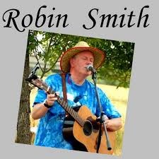

|
 |
BiographieMr Smith est Robin Smith, un artiste canadien d'origine irlando-brésilienne. Il a grandi dans les années 1970. Très tôt fasciné par l'incroyable pouvoir de la guitare, Mr Smith est lui-même devenu musicien, alternant aisément entre guitare acoustique, guitare électrique et guitare basse. |
Ecoutez quelques morceaux du musiques :
Regardez une video du musicien :